Do you still build websites?
We never stopped.
We’ve been quiet.
Because we’ve been
building.
Business websites
Online shops
Maintenance
& support
& support

Award-winning.
2026 Web Design Award
La Raza
Moyandi Scents
Keep Newcastle Alive
Friday Consulting
Fezile Security
Legend Black Jesus
Snesenzo Security
Restaurants. Shops. Security. Community.
Sawubona!
I’m Sabelo from Ntombii Tech.
I’m Sabelo from Ntombii Tech.

Websites that work.
WhatsApp 081 236 0230
ntombii.tech · Websites from R2,500